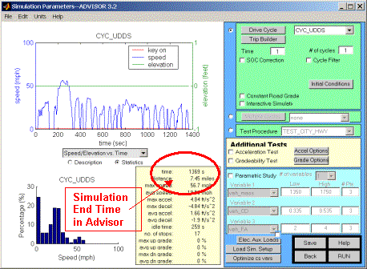

Preface
Ansoft developed the SIMPLORER–ADVISOR link to provide an easy-to-use, fast, and powerful electrical-system simulation capability for ADVISOR’s sophisticated system-level vehicle simulations. With the increasing electrical content of cars for communications, telematics, convenience features, added safety equipment, and new technologies such as X-by wire, the electrical subsystem of the car significantly influences overall vehicle behavior, emissions, and fuel economy. These developments and increased interest in alternative propulsion concepts (electric or hybrid-electric vehicles), the new 42V system voltage, and battery management require designers to combine electrical and system-level vehicle simulations.
This document is intended to give users who want to try the SIMPLORER–ADVISOR link guidance for a successful setup of a coupled problem and to run it. A complete reference manual is under development and will be available with version 2.0 of the link. The current link is already fully functional and extremely flexible. It allows engineers to combine SIMPLORER’s easy-to-use modeling capabilities with ADVISOR’s powerful system-level simulation capabilities.
This link runs only with a licensed SIMPLORER version. If you already have SIMPLORER, the only thing you need is the license for the SIMPLORER - Simulink®(SIM2SIM) interface. If you do not have a SIMPLORER license, you can request an evaluation copy. Please check Ansoft’s Web site to find your local sales representative or follow this link:
http://www.ansoft.com/products/em/simplorer/advisor
System Requirements
To use the SIMPLORER–ADVISOR link, you need the following:
ADVISOR is a Matlab®/Simulink® application. Although Matlab/Simulink is available for Windows® and UNIX® operating systems, ADVISOR is developed and tested on Windows platforms only. SIMPLORER runs on Windows platforms only.
SIMPLORER requires Windows 2000 or Windows NT.
The values listed first are required for reliable SIMPLORER performance. Values in parentheses are recommended for optimal performance.
CPU: Pentium® 400 MHz (1.4 GHz)
Memory: 128 MB (256 MB)
Hard disk: 150 MB (2 GB,SCSI or ATA 100)
Operating system: Windows 2000/Windows NT 4.0
Network version: Windows NT Server
Graphics card: VGA 800x600 (1024 x 768)
Installation
The SIMPLORER–ADVISOR link requires an installed and licensed version of SIMPLORER 5.0 with licensed SIM2SIM link.
To install SIMPLORER, please insert your SIMPLORER CD-ROM and follow the instructions on the screen. Please make sure that the SIM2SIM link is enabled with your license. If you are not sure, please contact your local sales office (see our Web site at www.ansoft.com).
The ADVISOR/Simplorer demo can be run following these steps:
Modeling
To create a model with a link between SIMPLORER and ADVISOR, perform these steps:
The following section describes the major features and procedures. Some limitations and restrictions apply. They will be resolved in later versions of the SIMPLORER–ADVISOR link:

Using the Gain block, SIMPLORER synchronizes its simulation time steps to the ADVISOR simulation time steps. The SmplAdv50.dll automatically exchanges the defined quantities between the two simulators at each ADVISOR time step. Between these constant time steps, SIMPLORER inserts additional variable time steps as required for an accurate computation of the circuit.
Limitations
Currently, there is only one SIMPLORER–ADVISOR link element per simulation allowed. It also is not possible to run the SIM2SIM interface simultaneously with the SIMPLORER–ADVISOR interface. All link information between the simulators is stored in a directory C:\winnt. It is necessary that users have access to that directory. The settings are not project-specific. Each time you define a new project, the former settings are overwritten.
Back to What’s New
ADVISOR Documentation Contents
Last Revised: [29-April-2002]: ab